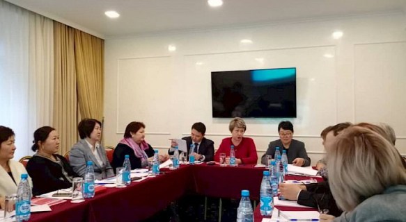
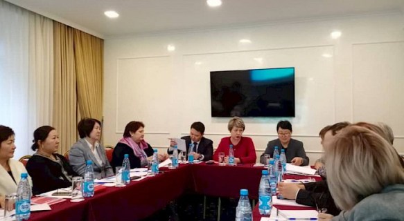

ИНСТИТУТ
АБИТУРИЕНТАМ
Концепция снижения вреда
Деятельность по продвижению КСВ
Брифинги
Научная исследовательская работа (в разработке)
Презентации
СМИ о нас
Концепция снижения вреда
Термин «снижение вреда» возник около 25 лет назад для обозначения стратегии и программ, целью
которых является снижение «негативных медицинских, социальных и экономических последствий
употребление психоактивных веществ для самих наркопотребителей, их семей и общества в целом».
По мнению специалистов в области охраны общественного здоровья, приоритетом стратегии снижения
вреда является «предупреждения инфицирования ВИЧ и другими инфекциями, передаваемыми путём
иньекционного введения наркотиков, а также передозировок, вовлечение в криминальную
деятельность, разрушение семейных социальных связей, равно как и других медицинских и социальных
последствий.
Исходя из этого, понятие снижения вреда подразумевает определённый комплекс
медико-профилактических мер, которые «призваны предотвратить передачу ВИЧ и других инфекций при
совместном использовании нестерильного инъекционного инструментария и растворов наркотика».
Существуют разные определение термина «снижения вреда», которые охватывают разные стороны теории
и практики и принимаются разными специалистами и активистами. Однако, у сторонников снижения
вреда не вызывают сомнения основные принципы этой стратегии.
Исследования, проведённые ВОЗ, показали, что здоровье человека зависит от системы медицинских
услуг всего лишь на 8-10%. Определяющими являются совсем другие факторы. В частности, на 20%
наше здоровье и физическое состояние определяется состоянием окружающей среды, ещё на 20% -
генетическими факторами, а на 50-52% - образом жизни. Цифры говорят сами за себя. Казалось бы,
ничего сложного: измени образ жизни, питайся правильно, избавься от вредных привычек, больше
двигайся и наслаждайся прекрасным здоровье! Однако на практике всё не так просто. Проблема в
том, что за вредными привычками, от которых человек не может отказаться, лежит зависимость.
Причём совсем не обязательно наркотическая, как, например, от никотина. Это может быть, скажем
психологическая зависимость от жирной еды. Или привычка ежедневно употреблять много сладкого,
потому что как нам кажется оно повышает настроение. Зачастую мы не в состоянии преодолеть эту
зависимость. А часто - просто не хотим, преуменьшая значение проблемы или просто не осознавая,
для чего нам это нужно.» - Альфия Самигуллина
Деятельность по продвижению КСВ
6 октября 2019 года
Круглый стол - с Казахской ассоциацией "Денсаулық"
В Бишкеке состоялся круглый стол по снижению факторов риска неинфекционных заболеваний
(НИЗ) и внедрению концепции снижения вреда....
6 октября 2021 года
Круглый стол в Жогорку Кенеше Кыргызской Республики
6 октября 2021 года в Жогорку Кенеше Кыргызской Республики по инициативе члена Комитета
по социальным вопросам, образованию...
Назад
Круглый стол - с Казахской ассоциацией "Денсаулық"
6 октября 2019 года
Было отмечено, что одним из важных аспектов аргументации для принятия государственных
решений
являются расчеты потерь и экономической эффективности от реализации концепции и
необходимость в
комплексе рассматривать все риски и источники факторов возникновения НИЗ.
«В Кыргызстане, как и во многих странах мира, НИЗ являются основной причиной
нетрудоспособности,
заболеваемости и преждевременной смертности населения.
По данным
 

Одной из стратегий общественного здравоохранения является концепция снижения вреда, которая
направлена на уменьшение негативных социальных и физических последствий, связанных с
различным поведением человека, таких как чрезмерное употребление алкоголя, наркомания,
малоподвижный образ жизни, курение, неправильное питание и ожирение.
Поделиться опытом Казахстана были приглашены эксперты рабочей группы по снижению факторов риска НИЗ,
В Казахстане для контроля и координации вопросов общественного здравоохранения сформирована
рабочая группа из 16 экспертов в состав которой входят представители общественных
организаций, национальные эксперты в области общественного здравоохранения и экономики,
представители государственных структур и Министерства здравоохранения.
Долгое время занимаясь защитой прав здоровья человека, я поняла, что любые запреты не
решают проблем. Люди, сознательно употребляющие наркотики, алкоголь и табак, как правило,
очень трудно расстаются с этими вредными привычками. И, применяя подход "Снижения вреда",
общество может предложить им менее вредную альтернативу, уважая право их выбора. В 2018 году
была разработана и принята концепция снижения вреда от НИЗ, где основными источниками
определены алкоголь, табакокурение, питание, физическая инертность, наркомания и
репродуктивное здоровье», - рассказала Бахыт Туменова.
Концепция призвана снижать вред, спасать и улучшать качество жизни, позволяя потребителям
оставаться интегрированными в общество, сокращая при этом расходы на здравоохранение.
«Сегодня в Казахстане НИЗ являются причиной 98,9% смертей, 11% бюджета здравоохранения
тратится на лечение болезней, относимых к этой категории. Членами рабочей группы по
снижению факторов риска НИЗ было проведено исследование в целях оценки экономического
ущерба, в связи с бременем НИЗ в Казахстане. Общий экономический эффект от реализации
Концепции в отношении 4 основных источников НИЗ (питание, табакокурение, алкоголь и
наркомания) может составлять 38,71 млрд. тенге ежегодно.
Возьмем, к примеру употребление табака. В Казахстане насчитывается 2,5 миллиона курильщиков.
По данным 2018 года курение стало причиной преждевременной смерти 20 900 человек, из которых
16 533 мужчин и 4 367 женщин. Расчёты показали, что в период с 2019 по 2030 годы, при
условии ежегодного переключения курильщиков на альтернативные виды курения, положительный
экономический эффект составит 85,7 млрд. тенге.
В целях борьбы с табакокурением концепция рекомендует подход по переключению всех
потребителей традиционных сигарет на альтернативные виды продуктов по доставке никотина, в
которых нет процесса сгорания табака и существенно меньшее количество канцерогенных
компонентов», - отметила Гульнар Курбанбаева.
Результаты исследования позволяют составить объективное мнение о текущей ситуации по
распространенности факторов риска НИЗ среди взрослого населения страны и в значительной
степени определять подходы в отношении профилактики НИЗ на предстоящие годы.
«В ноябре мы были приглашены молодыми врачами на конференцию в Ереван, которые занимаются
вопросами общественного здоровья для того, чтобы поделиться опытом в принятии концепции
снижения вреда. Нужно отметить, что Армения проявила заинтересованность и готова наряду с
Казахстаном стать участником этого проекта, и даже возникло предложение о необходимости
интеграции», - добавила Бахыт Туменова.
Круглый стол в Жогорку Кенеше Кыргызской Республики
6 октября 2021 года
6 октября 2021 года в Жогорку Кенеше Кыргызской Республики по инициативе члена
Комитета по социальным вопросам, образованию, науке, культуре и здравоохранению
Жогорку Кенеша Кыргызской Республики Самигуллиной Альфии Эльдаровны состоялся
круглый стол, где был представлен проект Концепции снижения вреда от источников
неинфекционных заболеваний.
В своем выступлении
Также было отмечено, что летальные случаи при коронавирусе связаны прежде всего с
сердечно-сосудистыми заболеваниями, раком, болезнями легких и диабетом.
При этом, согласно существующей статистике, лишь 10% состояния человека регулируется
медициной, 20 % - приходится на генетику, еще 20 % - связано с экологии, и целых 50%
- зависит от образа жизни.
В связи с этим, тем кто категорически не желает полностью отказаться от вредных
привычек и предлагается использовать методологию, базирующуюся на принципах
максимального снижения вреда.
В долгосрочной перспективе снижение вреда приведет к снижению факторов
неинфекционных заболеваний, что отвечает целям общественного здравоохранения, а
также увеличит продолжительность жизни населения.
По итогам круглого стола участники мероприятия - депутаты, представители научного и
медицинского сообщества из числа организаций медицины, образования,
неправительственного сектора, государственных органов - подписали резолюцию, в
которой выразили готовность объединить усилия и продвигать концепцию снижения вреда
в республике с целью эффективной профилактики и борьбы с неинфекционными
заболеваниями.
По предложению
По итогам заседания принято решение Комитета, где представлены основные меры по внедрению
Концепции в Кыргызской Республике и даны поручения Кабинету Министров Кыргызской Республики
по созданию рабочей группы под председательством курирующего Заместителя Председателя
Кабинета Министров, при участии депутатов Жогорку Кенеша Кыргызской Республики, Министерства
здравоохранения Кыргызской Республики, Министерства образования и науки Кыргызской
Республики, а также представителей научно-медицинского сообщества и гражданского общества
для проработки вопросов по реализации мер по внедрению Концепции.
Брифинги
Брифинг по результатам опроса по алкоголю
27.04.2022
Брифинг по результатам опроса по алкоголю
27.04.2022
Назад
Презентации
СМИ о нас
Предотвратить легче, чем лечить
13.04.2022
Что такое концепция снижения вреда и почему она является одним из самых эффективных в мире инструментов в борьбе с неинфекционными заболеваниями.
Читать далее...Большинство бишкекских студентов попробовали алкоголь до наступления совершеннолетия
28 .04.2022
Бишкекский международный медицинский институт провел исследование о распространенности употребления алкоголя среди учащихся столичных вузов, об этом заявила руководитель учреждения Альфия Самигуллина сегодня на пресс-конференции в Бишкеке.
Читать далее...Более 70% бишкекских студентов впервые попробовали алкоголь до совершеннолетия
27.04.2022
«Проблема неинфекционных заболеваний остается актуальной для всех стран мира, так как НИЗ являются ведущими причинами заболеваемости и смертности. В их основе лежат четыре поведенческих фактора риска......
Читать далее...Большинство бишкекских студентов попробовали алкоголь до наступления совершеннолетия
28 .04.2022
Бишкекский международный медицинский институт провел исследование о распространенности употребления алкоголя среди учащихся столичных вузов, об этом заявила руководитель учреждения Альфия Самигуллина сегодня на пресс-конференции в Бишкеке.
Читать далее...Большинство бишкекских студентов попробовали алкоголь до наступления совершеннолетия
28 .04.2022
Бишкекский международный медицинский институт провел исследование о распространенности употребления алкоголя среди учащихся столичных вузов, об этом заявила руководитель учреждения Альфия Самигуллина сегодня на пресс-конференции в Бишкеке.
Читать далее...В Бишкеке 15 % студентов признались, что им нравится употреблять алкоголь
29.04.2022
"Проблема неинфекционных заболеваний остается актуальной для всех стран мира. Как ни странно, именно эти заболевания являются ведущими причинами заболеваемости и смертности....
Читать далее...Модно, кайфово, по поводу и без: В Бишкеке выяснили, почему молодежь прикладывается к бутылке
28 .04.2022
«Скажу сразу, цифры неутешительные», – заслуженный врач КР, экс-депутат парламента Альфия Самигуллина обращается к выведенной на экран презентации, где в цифрах отображаются «масштабы бедствия».
Читать далее...Экс-депутат Самигуллина выяснила, почему студенты пьют алкоголь
28 .04.2022
"Студенты говорят, что им не хватает информации, бесплатных секций. Много чего не хватает. И они готовы изменить свои привычки, если мы бы дали им какую-то альтернативу. Итак, мы опросили 421 студента от 18 до 25 лет. Что меня шокировало?
Читать далее...Большинство бишкекских студентов попробовали алкоголь до наступления совершеннолетия
28 .04.2022
Бишкекский международный медицинский институт провел исследование о распространенности употребления алкоголя среди учащихся столичных вузов, об этом заявила руководитель учреждения Альфия Самигуллина сегодня на пресс-конференции в Бишкеке.
Читать далее...Исследование: 67% молодежи не хватает профилактической работы о вреде алкоголя
29.04.2022
«Проблема неинфекционных заболеваний остается актуальной для всех стран мира, так как НИЗ являются ведущими причинами заболеваемости и смертности. В их основе лежат четыре поведенческих фактора риска:
Читать далее...Предотвратить легче, чем лечить
13.04.2022
Что такое концепция снижения вреда и почему она является одним из самых эффективных в мире инструментов в борьбе с неинфекционными заболеваниями.
Читать далее...Большинство бишкекских студентов попробовали алкоголь до наступления совершеннолетия
28 .04.2022
Бишкекский международный медицинский институт провел исследование о распространенности употребления алкоголя среди учащихся столичных вузов, об этом заявила руководитель учреждения Альфия Самигуллина сегодня на пресс-конференции в Бишкеке.
Читать далее...Более 70% бишкекских студентов впервые попробовали алкоголь до совершеннолетия
27.04.2022
«Проблема неинфекционных заболеваний остается актуальной для всех стран мира, так как НИЗ являются ведущими причинами заболеваемости и смертности. В их основе лежат четыре поведенческих фактора риска......
Читать далее...Большинство бишкекских студентов попробовали алкоголь до наступления совершеннолетия
28 .04.2022
Бишкекский международный медицинский институт провел исследование о распространенности употребления алкоголя среди учащихся столичных вузов, об этом заявила руководитель учреждения Альфия Самигуллина сегодня на пресс-конференции в Бишкеке.
Читать далее...Большинство бишкекских студентов попробовали алкоголь до наступления совершеннолетия
28 .04.2022
Бишкекский международный медицинский институт провел исследование о распространенности употребления алкоголя среди учащихся столичных вузов, об этом заявила руководитель учреждения Альфия Самигуллина сегодня на пресс-конференции в Бишкеке.
Читать далее...В Бишкеке 15 % студентов признались, что им нравится употреблять алкоголь
29.04.2022
"Проблема неинфекционных заболеваний остается актуальной для всех стран мира. Как ни странно, именно эти заболевания являются ведущими причинами заболеваемости и смертности....
Читать далее...Модно, кайфово, по поводу и без: В Бишкеке выяснили, почему молодежь прикладывается к бутылке
28 .04.2022
«Скажу сразу, цифры неутешительные», – заслуженный врач КР, экс-депутат парламента Альфия Самигуллина обращается к выведенной на экран презентации, где в цифрах отображаются «масштабы бедствия».
Читать далее...Экс-депутат Самигуллина выяснила, почему студенты пьют алкоголь
28 .04.2022
"Студенты говорят, что им не хватает информации, бесплатных секций. Много чего не хватает. И они готовы изменить свои привычки, если мы бы дали им какую-то альтернативу. Итак, мы опросили 421 студента от 18 до 25 лет. Что меня шокировало?
Читать далее...Большинство бишкекских студентов попробовали алкоголь до наступления совершеннолетия
28 .04.2022
Бишкекский международный медицинский институт провел исследование о распространенности употребления алкоголя среди учащихся столичных вузов, об этом заявила руководитель учреждения Альфия Самигуллина сегодня на пресс-конференции в Бишкеке.
Читать далее...Исследование: 67% молодежи не хватает профилактической работы о вреде алкоголя
29.04.2022
«Проблема неинфекционных заболеваний остается актуальной для всех стран мира, так как НИЗ являются ведущими причинами заболеваемости и смертности. В их основе лежат четыре поведенческих фактора риска:
Читать далее...